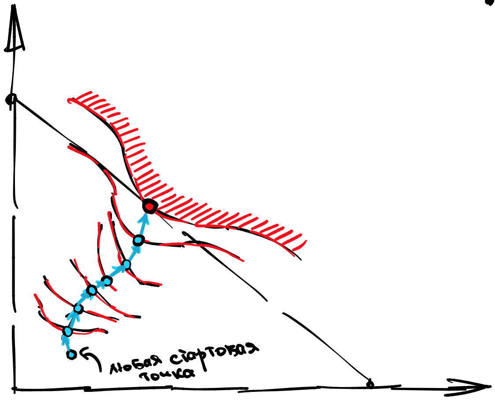

Третья лекция, часть 2¶
Пусть есть, для простоты, два товара. Как обычно, будем обозначать их (и их спросы) как \(x,y\) а соответствующие цены как \(p,q\).
Тождество Роя¶
Мы хотим связать между собой три объекта: \(x^{\ast}(p,q,I), y^{\ast}(p,q,I)\) и \(V^{\ast}(p,q,I)\). Для этого мы воспользуемся фундаментальным свойством, что косвенная полезность это полезность, в которую подставили спросы:
Убедитесь, что это, действительно, корректная запись.
Что можно сделать с этим тождеством?
продифференциировать по \(p\)
продифференциировать по \(q\)
Заметим, что цены входят слева дважды, а справа не входят вообще. То есть, с точки зрения дифференциирования по ценам, справа стоит константа, а слева сложная функция. По правилам дифференциирования, полный дифференциал функции \(V\) по \(p\) равен:
Поскольку \(\frac{\partial I}{\partial p} = x\),
Aналогично для второй цены
Комбинируя это в векторной форме, мы получаем:
Theorem 6 (Тождество Роя)
Если \(\vec{x}\) - весь вектор спросов, а \(\vec{p}\) - весь вектор цен то
Заметьте, что я меняю интерпретацию знаков \(x, p\) в зависимости от контекста. К этому надо привыкать, контекст задачи важен. Например, \(\nabla\) обычно означает вектор, но в знаменателе \(\nabla_I = \frac{\partial V}{\partial I}\) это число, потому что \(I\) это скаляр.
Зачем оно нужно?¶
У тождества Роя есть две основные задачи.
Во первых, ваши эконометрические данные могут быть в терминах косвенной полезности а не бюджетов. Например, в социальном опросе может быть вопрос: “оцените по шкале от 1 до 10 ваше благосостояние в 2010, 2011 и 2012 году”, вместо “запишите ваш доход в 2010, 2011 и 2012 году”. Считается, что люди неохотно сообщают свои настоящий доход, богатые занижают а бедные завышают.
Во вторых, иногда проще запомнить косвенную полезность и вывести из нее спросы, чем запоминать спросы. Также, про косвенную полезность удобно составлять задачи, чтобы потом тестировать вас на экзамене.
Теорема об Огибающей¶
Это чрезвычайно важная теорема, и, в отличие от остальных, по настоящему полезная. Лично я пользуюсь этой теоремой практически каждый день.
Рассмотрим семейство опорных функций \(f(x, p)\), где \(x\) - переменная а \(p\) - параметр. Определим огибающую \(V(p)\) как результат оптимизации функции \(f\) по какому-то статическому множеству \(Х\):
тогда…
Theorem 7 (Об Огибающей)
Функция \(V(p)\) (почти всюду) дифференциируема и
… то есть, наклон огибающей равен наклону опорной функции в точке касания.
Интуиция огибающей¶
Представьте себе, что вы сложили вместе крупные предметы разной формы (стол, компьютер, велосипед) и, чтобы они не пылились, накрыли все эластичной пленкой.
Пленка плотно прилегла к тем предметам, которые оказались, по разным причинам выше всех остальных. Можно сказать, что пленка - это (верхняя) огибающая вашего семейства опорных объектов, поскольку она лежит там, где находится самый высокий объект в каждой точке, см. иллюстрацию.

Теперь посмотрим на нашу эластичную пленку. В точках касания с теми опорными объектами что остановили ее от падения, наклон пленки равен наклону этих объектов, так как она повторяет их форму, см. иллюстрацию.

Этот практиически умозрительный факт и есть основная идея Теоремы об Огибающей.
Запомните следующую мантру: наклон огибающей равен наклону опорной функции в точке касания. То есть, чтобы найти наклон огибающей в точке \(p\) нужно из всех опорных функций (они индексированы через \(x\)) выбрать ту, на которую в этой точке (точка это значение параметра \(p\)) опирается огибающая, и взять ее наклон, опять же, в пространстве параметра \(p\).
Чтобы не перепутать, какие роли у \(x\) и у \(p\), помните, что огибающая - это функция от параметра а не от оптимизационной переменной, которая индексирует опорные функции. Соответственно, огибание происходит в пространстве парамера, а не в пространстве переменных по которой вы оптимизировали.
Параметрами у нас, как правило выступают цены \(p, q\) и бюджет \(I\).
Примеры¶
Для демонстрации Теоремы об Огибающей, рассмотрим несколько абстрактных примеров.
Example 6
Example 7
Практическая польза¶
Может показаться, что дифференцирование опорной функции и подстановка это лишняя трата времени, ведь можно просто решить задачу и продифференцировать \(V\) по параметру, в лоб.
Это правда, однако, если у вас абстрактная функция, вы не можете просто так ее промаксимизировать. Поэтому, эта теорема очень удобна при доказательствах, но не только.
Зачастую, видение огибающей позволяет сэкономить время при дифференцировании, в том смысле, что вам не надо лишний раз протаскивать производную по правилу дифференциирования сложной функции.
К примеру, предположим, что у вас есть функция \(F(x, y, p)\) и eще две функции \(x = g(p), y = h(p)\). Если вас попросят найти полную производную \(F(g(p), h(p), p)\) по \(p\) то получится:
Теперь предположим, что нам стало известно, что \(x = g(p), y = h(p)\) это, на самом деле, оптимумы функции \(F\). Тогда, по Теореме об Огибающей
Получается, что Теорема об Огибающей позволяет нам игнорировать параметр находящийся внутри оптимальной точки при подсчете полного дифференциала. Это знание позволяет в отдельных упражнениях сэкономить 10-20 минут изнурительных вычислений.
Как насчет косвенной полезности¶
Для того, чтобы активировать всю мощь Теоремы об Огибающей, вам достаточно взять любую функцию, которая является результатом оптимизации и продифференциировать ее по любому параметру.
К примеру, мы могли бы продифференциировать косвенную полезность по ценам. Тогда Теорема об Огибающей даст вам связь этих производных с производными опорной функции в точках оптимума.
Что есть опорная функция для \(V(p,q,I)\)?
Хочется сказать что сама полезность \(U(x,y)\) но правильный ответ это Лагранжиан
по крайней мере он подходит формально, так как зависит от \(p,q,I\).
Любопытным также является факт, что теорема об огибающей позволяет найти производную косвенной полезности по бюджету.
Чему равна \(\partial V/ \partial I\)?
Множителю Лагранжа \(\lambda\).
Минимизация расходов¶
Сейчас мы перейдем к задаче, на первый взгляд, никак не связанной с максимизацией полезности. Если быть точными, мы будем минимизировать сумму расходов на все товары при минимально заданном таргетированном уровне полезности \(\bar U\). Для простоты, пусть будут два товара \(x, y\) с ценами \(p, q\).
Сравните с классической задачей максимизации полезности
Условия Первого Порядка¶
На самом деле, эти две задачи очень близко связаны. Давайте выпишем Лагранжианы в обеих задачах, но обозначим множители Лагранжа по разному.
Поверим на слово, что обе задачи выпуклые, и выпишем УПП для поиска оптимума:
Легко видеть, что для того, чтобы решения совпали, необходимо чтобы
во первых, \(\gamma \lambda = 1\), но это никак не ограничивает, так как мы сами выбираем множитель Лагранжа, соответственно, мы можем всегда подогнать один к другому.
во вторых, для любого \(I\) найдется \(\bar U\) и наоборот.
в третьих, при достижении таргетированной полезности обязательно расходовался весь бюджет.
Последнее условие известно как Закон Вальраса. Если он выполнен, и задача выпуклая, то минимизация издержек порождает абсолютно такую же систему условий первого порядка, как и максимизация полезности.
Закон Вальраса¶
Для начала приведем пример полезности, при которой Закон Вальраса не выполнен, это постоянная полезность \(U(x,y) = 1\).
Действительно, с точки зрения полезности, все бюджетное множество состоит из оптимумов. Однако, лишь одна точка \((x,y)=(0,0)\) по настоящему минимизирует издержки, при таргетированной полезности \(\bar U = 0\). Что тут произошло?
Дело в том, что у полезности \(U(x,y) = 1\) толстые линии уровня. Чтобы Закон Вальраса заработал, необходимо исключить появление таких линий уровня. Это свойство называется локальной ненасыщаемостью в \(\mathbb{R}^2_{+}\).
Definition 34
Полезность локально ненасыщаема в \(X\), если для каждой точки \(x \in X\) и для любой сколько угодно малой окрестности этой точки в \(X\), найдется вторая точка \(y\) в этой окрестности, такая что \(U(y)>U(x)\).
Большинство полезностей в нашем курсе будет обладать локальной ненасыщаемостью. Теперь мы готовы сформулировать первую теорему
Theorem 8 (Закон Вальраса)
Если полезность локально ненасыщаема в \(\mathbb{R}^n_{+}\), то любое из решений задачи максимизации полезности всегда лежит на бюджетном ограничении.
Это утверждение доказывается от противного, но я предпочитаю интерпретировать его так: у локально ненасыщаемой в \(\mathbb{R}^n_{+}\) полезности, в любой точке есть направление роста, указывающее внутрь \(\mathbb{R}^n_{+}\). Поэтому, если бюджетное ограничение убрать, можно бесконечно подниматься по этому направлению и никогда не достигнуть оптимума. Единственное, что может остановить градиентный подъем - бюджетная линия, см. иллюстрацию.
{kind=link}
Соответственно, решение всегда лежит на бюджетной линии. Осталось убедиться, что для любого \(I\) найдется \(\bar U\) и наоборот.
Хиксианский и Маршалианский спрос¶
Definition 35
Назовем Хиксианским спрос в задаче минимизации расходов, и Маршалианским спрос в задаче максимизации полезности.
Для товаров \(x,y\) будем обозначать Хиксианские спросы как
а Маршалианские спросы как
Разрешаю писать просто \(hx, hy, mx, my\).
Тогда, в для задачи максимизации полезности с параметрами \((p,q,I)\) существует
такой что задача минимизации расходов с \((p, q, \bar U_0)\) эквивалентна ей. Аналогично, для задачи миимизации расходов с \((p, q, I)\) существует
такой что задача максимизации полезности с \((p, q, I_0)\) эквивалентна ей.
Функция расходов и Дуальность¶
Мы подошли к очень важному наблюдению.
Theorem 9 (Дуальность)
Если полезность (квази-)вогнутая и локально ненасыщаемая, то любое решение (как функция от цен) задачи минимизации расходов воспроизводится как одно из решений (опять же, как функция от цен) максимизации полезности и наоборот.
Это значит, что задача максимизации полезности и задача минимизации расходов, по большому счету эквивалентны, в определенном геометрическом смысле . Есть только одна проблема - у Маршалианского и Хиксианского спросов разный набор аргументов, поэтому они не могут совпадать номинально. Для того, чтобы поправить ситуацию, нам понадобится еще одна новая функция.
Definition 36
Назовем функцией расходов значение целевой функции в оптимуме, в задаче минимизации расходов:
Это совершенно аналогично тому, как мы ввели косвенную полезность \(V(p,q,I)\) через значение целевой функции в оптимуме в задаче максимизации полезности.
Так в каком смысле они совпадают?
Любой Маршалианский спроса \(m_x(p,q,I)\) совпадает с Хиксианским с подставленной косвенной функцией \(h_x(p,q,V(p,q,I))\). А любой Хиксианский спрос \(h_x(p,q,\bar U)\) совпадает с Маршалианским с подставленной функцией расходов \(m_x(p,q,E(p,q,\bar U))\).
Лемма Шепарда¶
Мы проходили сегодня уже Теорему об Огибающей и успешно применили ее к задаче максимизации полезности. А что произойдет, если мы применим ее к задаче минимизации расходов?
Прежде всего, мы должны ответить на следующий вопрос:
Что есть опорная функция для \(E(p,q,I)\)?
Хочется сказать что расходы \(p x + q y\) но правильный ответ это Лагранжиан
Правда, это ничего не меняет, так как прибавка не зависит от параметров.
Теперь, когда мы знаем чему равна опорная функция, мы можем сформулировать следующую теорему:
Theorem 10 (Лемма Шепарда)
Если \(\vec{h}\) - весь вектор спросов, а \(\vec{p}\) - весь вектор цен то
то есть, Хиксианский спрос является градиентом функции расходов.
Лемма Шепарда это первая манифестация Теоремы об Огибающей в нашем курсе, которых будет очень, очень много.
Как не запутаться?¶
Подводя итог, у нас было две задачи: максимизации полезности и минимизации расходов. Каждая задача имела свой набор параметров: первая \((p,q,I)\) а вторая \((p,q,\bar U)\). Каждая задача произвела три обьекта:
оптимальные \(m_x(p,q,I), m_y(p,q,I)\) и косвенная полезность \(V(p,q,I)\) в первой задаче
оптимальные \(h_x(p,q,\bar U), h_y(p,q,\bar U)\) и функция расходов \(E(p,q,\bar U)\) во второй задаче
Если вы решали задачу максимизации полезности и нашли маршалианский спрос, который зависит от \(\bar U\) то правильным ответом это быть не может, поскольку вам разрешено только пользоваться \((p,q,I)\). Это значит, что вы недоподставили где то, недоиспользовали Дуальность.
Можно изобразить “схему перемещений” между объектами:

Косвенная полезность и функция расходов тривиально выводятся из соответствующих спросов, это будет “подъем наверх”.
Далее, при помощи дуальности и спросов вы можете свободно перемещаться “горизонтально” между \(V\) и \(E\). И наоборот, при помощи дуальности и \(V\), \(E\) вы можете свободно перемещаться “горизонтально” между спросами.
Наконец, Лемма Шепарда и Тождество Роя позволяют вам “спускаться вниз” от косвенной полезности и функции расходов к маршалианским и хиксианским спросам соответственно.
Примеры¶
Полезность Кобб-Дуглас¶
При работе с Кобб-Дугласом
приятнее всего начинать с задачи максимизации прибыли. Как мы помним, расходы на каждый из товаров делятся в пропорциях, которые не зависят ни от цен, ни от доходов. Пусть для простоты суммируются в единицу: \(\alpha + \beta = 1\), тогда
лучше всего запомнить это наизусть. Также можно запомнить (с точностью до константы \(C\)) неявную полезностъ в логарифмической форме с весами суммирующимися в единицу:
Нам осталось найти хиксианские спросы и функцию расходов. Но давайте не торопиться, а сначала рассмотрим наши опции. Один способ - сфомулировать задачу минимизации расходов, решить ее, и затем, чисто механически, вычислить функцию расходов. Другой способ - пройти горизонтально от косвенной полезности к функции расходов, а затем спуститься вниз по Лемме Шепарда.
В какой последовательности лучше делать?
Вывести функцию расходов по дуальности, а затем спуститься по Лемме Шепарда.
Proof. Используем дуальность, тобы перейти от \((p,q,I)\) к \((p,q,\bar U)\):
Применяя экспоненту к правой и левой части, получаем:
И прямо таки дифференциируем ее по ценам.
Обратите внимание, что понижение степени, к которому вы привыкли в курсах матанализа, равносильно делению. Это удобно.
Леонтьевская полезность¶
Когда мы имеем дело с Леонтьевской полезностью
проще сначала вывести Хиксианский спрос, потому что мы знаем, что в оптимуме все аргументы минимума должны выдавать одно и то же значение, равное таргетированному уровню полезности \(\bar U\). Таким образом:
откуда легко выводится функция расходов
а уже из нее, по дуальности, косвенную полезность
Наконец, при помощи косвенной полезности, мы можем легко превратить Хиксианский спрос в Маршалианский.
Линейная полезность¶
Когда мы имеем дело с линейной полезностью
достаточно легко вывести косвенную полезность (см. вторая лекция)
откуда, по дуальности, функция расходов равна
Наконец, мы можем спуститься в Хиксианский спрос: